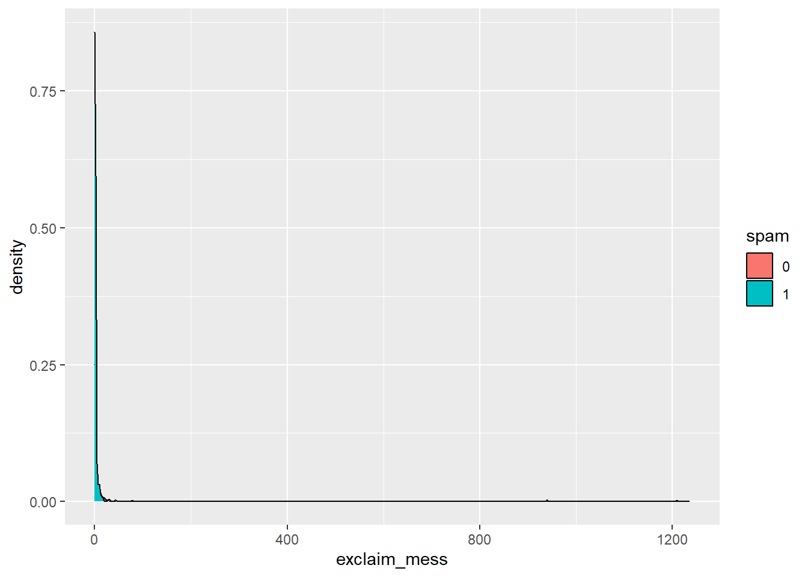
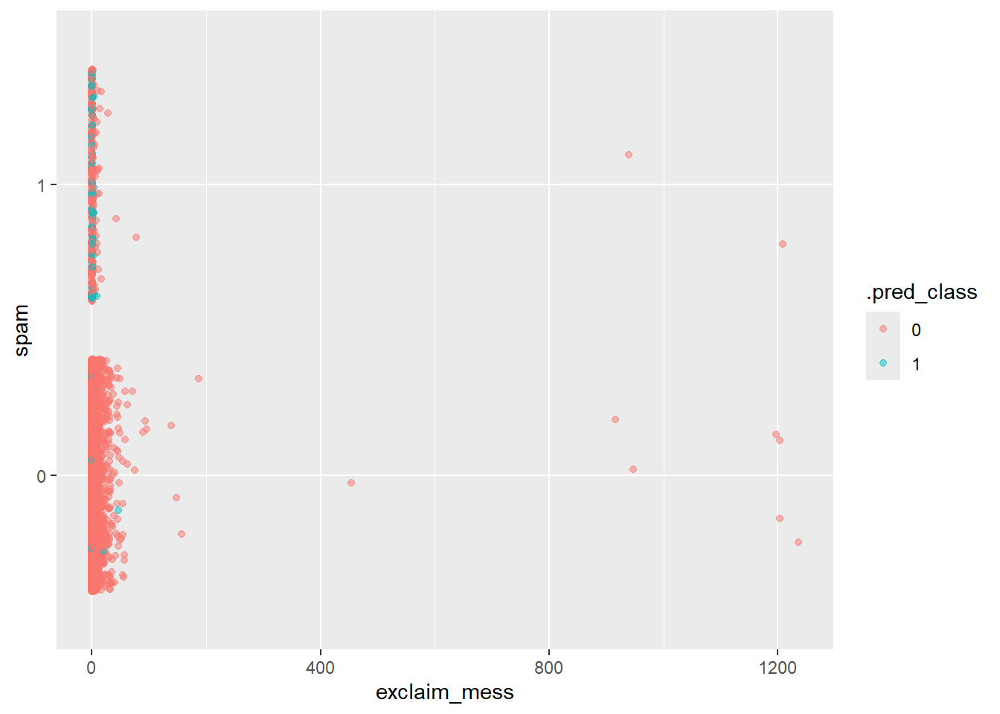

library(tidyverse)
library(tidymodels)
library(openintro)AE 11: Building a spam filter
Suggested answers
Application exercise
Answers
Important
These are suggested answers. This document should be used as reference only, it’s not designed to be an exhaustive key.
In this application exercise, we will
- Use logistic regression to fit a model for a binary response variable
- Fit a logistic regression model in R
- Use a logistic regression model for classification
To illustrate logistic regression, we will build a spam filter from email data.
The data come from incoming emails in David Diez’s (one of the authors of OpenIntro textbooks) Gmail account for the first three months of 2012. All personally identifiable information has been removed.
glimpse(email)Rows: 3,921
Columns: 21
$ spam <fct> 0, 0, 0, 0, 0, 0, 0, 0, 0, 0, 0, 0, 0, 0, 0, 0, 0, 0, 0, …
$ to_multiple <fct> 0, 0, 0, 0, 0, 0, 1, 1, 0, 0, 0, 0, 0, 0, 0, 0, 0, 0, 0, …
$ from <fct> 1, 1, 1, 1, 1, 1, 1, 1, 1, 1, 1, 1, 1, 1, 1, 1, 1, 1, 1, …
$ cc <int> 0, 0, 0, 0, 0, 0, 0, 1, 0, 0, 0, 1, 0, 1, 2, 1, 0, 2, 0, …
$ sent_email <fct> 0, 0, 0, 0, 0, 0, 1, 1, 0, 0, 1, 0, 0, 1, 0, 1, 0, 0, 1, …
$ time <dttm> 2012-01-01 01:16:41, 2012-01-01 02:03:59, 2012-01-01 11:…
$ image <dbl> 0, 0, 0, 0, 0, 0, 0, 1, 0, 0, 0, 0, 0, 0, 0, 0, 0, 0, 0, …
$ attach <dbl> 0, 0, 0, 0, 0, 0, 0, 1, 0, 0, 0, 0, 0, 0, 0, 0, 0, 0, 0, …
$ dollar <dbl> 0, 0, 4, 0, 0, 0, 0, 0, 0, 0, 0, 0, 0, 0, 2, 0, 5, 0, 0, …
$ winner <fct> no, no, no, no, no, no, no, no, no, no, no, no, no, no, n…
$ inherit <dbl> 0, 0, 1, 0, 0, 0, 0, 0, 0, 0, 0, 0, 0, 0, 0, 0, 0, 0, 0, …
$ viagra <dbl> 0, 0, 0, 0, 0, 0, 0, 0, 0, 0, 0, 0, 0, 0, 0, 0, 0, 0, 0, …
$ password <dbl> 0, 0, 0, 0, 2, 2, 0, 0, 0, 0, 0, 0, 0, 0, 0, 0, 1, 0, 0, …
$ num_char <dbl> 11.370, 10.504, 7.773, 13.256, 1.231, 1.091, 4.837, 7.421…
$ line_breaks <int> 202, 202, 192, 255, 29, 25, 193, 237, 69, 68, 25, 79, 191…
$ format <fct> 1, 1, 1, 1, 0, 0, 1, 1, 0, 1, 1, 0, 1, 1, 1, 1, 1, 1, 0, …
$ re_subj <fct> 0, 0, 0, 0, 0, 0, 0, 0, 0, 0, 0, 1, 0, 1, 1, 1, 0, 1, 1, …
$ exclaim_subj <dbl> 0, 0, 0, 0, 0, 0, 0, 0, 0, 0, 0, 0, 0, 0, 0, 0, 1, 0, 0, …
$ urgent_subj <fct> 0, 0, 0, 0, 0, 0, 0, 0, 0, 0, 0, 0, 0, 0, 0, 0, 0, 0, 0, …
$ exclaim_mess <dbl> 0, 1, 6, 48, 1, 1, 1, 18, 1, 0, 2, 1, 0, 10, 4, 10, 20, 0…
$ number <fct> big, small, small, small, none, none, big, small, small, …The variables we’ll use in this analysis are
spam: 1 if the email is spam, 0 otherwiseexclaim_mess: The number of exclamation points in the email message
Goal: Use the number of exclamation points in an email to predict whether or not it is spam.
Exploratory data analysis
Let’s start by taking a look at our data. Create a density plot to investigate the relationship between spam and exclaim_mess. Additionally, calculate the mean number of exclamation points for both spam and non-spam emails.
ggplot(email, aes(x = exclaim_mess, fill = spam)) +
geom_density()
email |>
group_by(spam) |>
summarize(mean_ep = mean(exclaim_mess))# A tibble: 2 × 2
spam mean_ep
<fct> <dbl>
1 0 6.51
2 1 7.32Logistic regression
Let \(p\) be the probability an email is spam (success).
- \(\frac{p}{1-p}\): odds an email is spam (if p = 0.7, then the odds are 0.7/(1 - 0.7) = 2.33)
- \(\log\Big(\frac{p}{1-p}\Big)\): “log-odds”, i.e., the natural log, an email is spam
The logistic regression model using the number of exclamation points as an explanatory variable is as follows:
\[\log\Big(\frac{p}{1-p}\Big) = \beta_0 + \beta_1 \times exclaim\_mess\]
The probability an email is spam can be calculated as:
\[p = \frac{\exp(\beta_0 + \beta_1 \times exclaim\_mess)}{1 + \exp(\beta_0 + \beta_1 \times exclaim\_mess)}\]
Exercises
Exercise 1
- Demo: Fit the logistic regression model using the number of exclamation points to predict the probability an email is spam.
log_fit <- logistic_reg() |>
fit(spam ~ exclaim_mess, data = email)
tidy(log_fit)# A tibble: 2 × 5
term estimate std.error statistic p.value
<chr> <dbl> <dbl> <dbl> <dbl>
1 (Intercept) -2.27 0.0553 -41.1 0
2 exclaim_mess 0.000272 0.000949 0.287 0.774- Your turn: How does the code above differ from previous code we’ve used to fit regression models? Compare your summary output to the estimated model below.
\[\log\Big(\frac{p}{1-p}\Big) = -2.27 - 0.000272 \times exclaim\_mess\]
We use logistic instead of linear regression. The lefthand side is the log-odds of an email being spam.
Exercise 2
- What is the probability the email is spam if it contains 10 exclamation points? Answer the question using the
predict()function with the appropriatetypeargument.
new_email <- tibble(
exclaim_mess = 10
)
predict(log_fit, new_data = new_email, type = "prob")# A tibble: 1 × 2
.pred_0 .pred_1
<dbl> <dbl>
1 0.906 0.0937The probability the email is spam is 0.09.
- A probability is nice, but we want an actual decision. Classify the email. What threshold does
predict()use by default?
predict(log_fit, new_data = new_email, type = "class")# A tibble: 1 × 1
.pred_class
<fct>
1 0 The email is classified as not spam. The default threshold is 0.5.
Exercise 3
- Fit a model with all variables in the dataset as predictors.
log_fit2 <- logistic_reg() |>
fit(spam ~ ., data = email)Warning: glm.fit: fitted probabilities numerically 0 or 1 occurred- If you used this model to classify the emails in the dataset, how would it do? Use the fitted model to classify each email in the dataset, and then calculate the classification error rates (TP, TN, FP, FN).
log_aug2 <- augment(log_fit2, email)
ggplot(log_aug2, aes(x = exclaim_mess, y = spam, color = .pred_class)) +
geom_jitter(alpha = 0.5)
log_aug2 |>
count(spam, .pred_class) |>
group_by(spam) |>
mutate(p = n / sum(n))# A tibble: 4 × 4
# Groups: spam [2]
spam .pred_class n p
<fct> <fct> <int> <dbl>
1 0 0 3521 0.991
2 0 1 33 0.00929
3 1 0 299 0.815
4 1 1 68 0.185 The true negative rate is 0.99.
The false positive rate is 0.01.
The true positive rate is 0.19.
The false negative rate is 0.81.